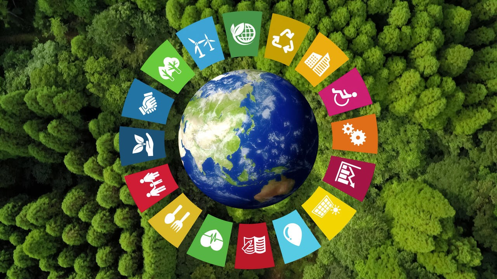

Zhvillimi i Qëndrueshëm dhe Rëndësia e Ruajtjes së Ekosistemeve
Mirë se erdhët!
Në një botë që po ndryshon me shpejtësi, zhvillimi i qëndrueshëm është kthyer në një domosdoshmëri për të ruajtur mjedisin dhe cilësinë e jetës. Ky website është ndërtuar si pjesë e projektit të gjeografisë dhe synon të informojë, sensibilizojë dhe frymzë përmes pesë nëntemave kryesore. Le të zbulojmë së bashku sesi mund të kontribuojmë për një të ardhme më të gjelbër dhe më të drejtë!
1. The Mobius Loop - Kuptim dhe Domethënie
Mobius Loop është simboli universale i riciklimit dhe paraqet një cikël të vazhdueshëm që promovon ripërdorimin dhe reduktimin e mbetjeve. Ai përbëhet nga tre shigjeta që formojnë një trekëndësh të pafund. Simbolika është e qartë: gjithçka që prodhojmë dhe përdojim duhet të kthehet në cikël përmes riciklimit. Përdorimi i këtij simboli në paketimet ose produktet në nënpunim i bën konsumatorët të vetëdijshëm dhe i shtyn drejt zgjedhjeve më të shëndetshme për planetin. Ky mesazh i thjeshtë vizual ndihmon në edukimin ekologjik që niset nga njohja e simboleve.
2. Zhvillimi i Qëndrueshëm dhe Rëndësia e Tij

Zhvillimi i qëndrueshëm i referohet rritjes ekonomike që nuk dëmton mjedisin dhe respekton nevojat e brezave të ardhshëm. Ai bazohet mbi tre shtylla kryesore: mjedisi, ekonomia dhe shoqëria. Në praktikë, kjo do të thotë investime në energji të ripërtërshme, mbrojtje të biodiversitetit, përdorim të përgjegjshëm të burimeve dhe ndërtim komunitetesh të qëndrueshme. Vetëdija mbi ndikimin që kemi si individë ndihmon në zgjedhje të zgjuara dhe të ndërgjegjshme që kontribuojnë për një të ardhme më të mirë për të gjithë.
3. Planeti Plastik - Fakte dhe Shembuj
Çdo vit prodhohen mbi 300 milionë ton plastikë, nga të cilat një pjesë e madhe përfundon në oqeane. Mikroplastika është tashmë pjesë e zinxhirit ushqimor dhe ndikon negativisht në shëndetin e kafshëve dhe njerëzve. Një shembull shqetësues është ishulli i plehrave në Oqeanin Paqësor, që ka sipërfaqe më të madhe se Franca. Disa vende si Kanadaja, BE-ja dhe India kanë ndaluar produktet plastike të përdorimit të vetëm, por sfida mbetet e madhe. Çdo individ mund të kontribuojë duke përdorur alternativa si qeset e ripërdorshme dhe duke mbështetur markat që reduktojnë ambalazhin plastik.
4. Qytetari Eco - Shembuj nga Vende të Ndryshme Botër
Në Suedi, qytetarët ndajnë mbeturinat me efikasitet dhe shumica e energjisë vjen nga burime të pastra. Në Japoni, kultura e "mottainai" nxit riparimin dhe riciklimin. Gjermania ka sisteme depozitimi të shisheve plastike ku qytetarët marrin kthetra monetare. Në Kosta Rika, më shumë se 98% e energjisë vjen nga burime të ripërtërshme. Këto shembuj tregojnë se qeveritë dhe qytetarët mund të bashkëpunojnë për rezultate konkrete. Edukimi, politika të mira dhe vetëdija sociale janë çelësi i suksesit.
5. Si Mund të Behemi Qytetarë Eco

Të qenit qytetar eco fillon nga zakonet e përditshme: zvogëlimi i mbeturinave, kursimi i energjisë, përdorimi i transportit publik dhe ushqimi lokal. Mund të fillojmë me refuzimin e plastikës, mbjelljen e pemëve, pjesëmarrjen në pastrime komunitare dhe edukimin e të tjerëve. Përmes veprimeve të vogla, krijojmë ndikim të madh. Bashkohuni me lëvizjet ekologjike, përhapni mesazhe pozitive dhe jini shembull për të tjerët. Planeti varet nga zgjedhjet tona të sotme!